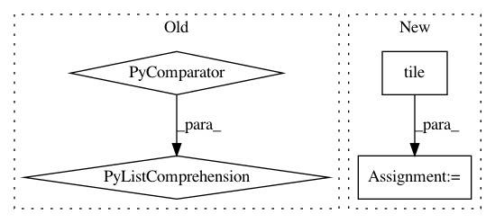

f7b4c6de2037ebedf6bc8ea5979e81666d54534f,research/object_detection/meta_architectures/center_net_meta_arch.py,,convert_strided_predictions_to_normalized_boxes,#,992
Before Change
filter_nonoverlapping=False)
return boxes
box_lists = [box_list.BoxList(boxes) for boxes in tf.unstack(boxes, axis=0)]
true_heights, true_widths, _ = tf.unstack(true_image_shapes, axis=1)
true_heights_list = tf.unstack(true_heights, axis=0)
true_widths_list = tf.unstack(true_widths, axis=0)
box_lists = list(map(_normalize_boxlist,
zip(box_lists, true_heights_list, true_widths_list)))
boxes = tf.stack([box_list_instance.get() for
box_list_instance in box_lists], axis=0)
return boxes
After Change
// Note: We use tf ops instead of functions in box_list_ops to make this
// function compatible with dynamic batch size.
boxes = boxes * stride
true_image_shapes = tf.tile(true_image_shapes[:, tf.newaxis, :2], [1, 1, 2])
boxes = boxes / tf.cast(true_image_shapes, tf.float32)
boxes = tf.clip_by_value(boxes, 0.0, 1.0)
return boxes
In pattern: SUPERPATTERN
Frequency: 3
Non-data size: 4
Instances
Project Name: tensorflow/models
Commit Name: f7b4c6de2037ebedf6bc8ea5979e81666d54534f
Time: 2020-12-01
Author: rathodv@google.com
File Name: research/object_detection/meta_architectures/center_net_meta_arch.py
Class Name:
Method Name: convert_strided_predictions_to_normalized_boxes
Project Name: rail-berkeley/softlearning
Commit Name: 7537cc093489dc1b38d52c8b0f5d9dd543c8c7fe
Time: 2019-02-01
Author: hartikainen@berkeley.edu
File Name: softlearning/algorithms/sql.py
Class Name: SQL
Method Name: _create_svgd_update
Project Name: tensorflow/tpu
Commit Name: 0638b9c86cfec273b2e5799aea281ffa74d9161d
Time: 2020-05-12
Author: pengchong@google.com
File Name: models/official/detection/serving/inputs.py
Class Name:
Method Name: raw_image_tensor_input